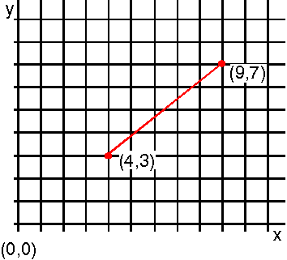

The graphic output sent to the presentation space is created by graphic primitives, such as straight or curved lines. How those primitives appear depends in part on the mode of the presentation space.
In modal systems, certain information that modifies a graphic primitive is established before you use the instruction to draw the primitive. The following figure is an example of a red, solid line being drawn from (4,3) to (9,7). With PM's modal interface, the only value you need to supply to GpiLine is the end point (9,7). 
Line Drawn with GpiLine
The line is drawn automatically with the current color, red, in the current line type, solid, and starting from the current position, (4,3). There are separate functions for specifying the current color, line type, and position.
In nonmodal graphics systems, you supply information relevant to an instruction when you use that instruction. For example, you could use a line-drawing instruction in which you would specify that the line is to be green, dotted, and drawn from point a to point b. Those values or attributes are bound to a particular drawing instruction, and affect no other. If you are going to continue the line from point b to point c, you must again specify "green", "dotted", "point b", and finally, "point c".
For the PM programming interface, the default values for the graphics primitives (or current values if the defaults have been modified) are stored in the presentation space along with the current position. While at first it might seem like many functions are necessary to perform one step, such as drawing a line, a modal graphics system actually saves resources. After you perform the first line draw, chances are that if you draw a second or third line, the line attributes are not likely to change; that is, the mode of the presentation space remains the same. Thus, the constant repetition of attributes in a nonmodal graphics system actually uses more resources if the desired output requires more than one or two graphics functions.
It is possible to define graphics, and store their definitions, without sending them to a screen or a printer. In these situations, the concept of attribute currentness becomes relevant. The color of a line on a screen, for example, is the color that was current when you defined the line. This is not always the color that is current when the line is drawn.